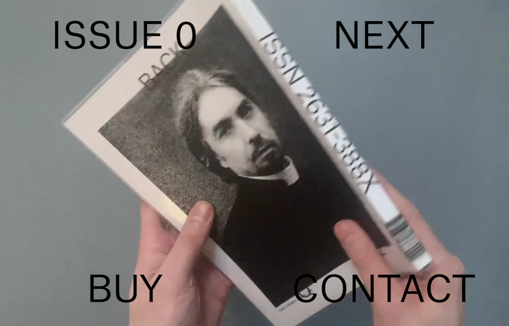
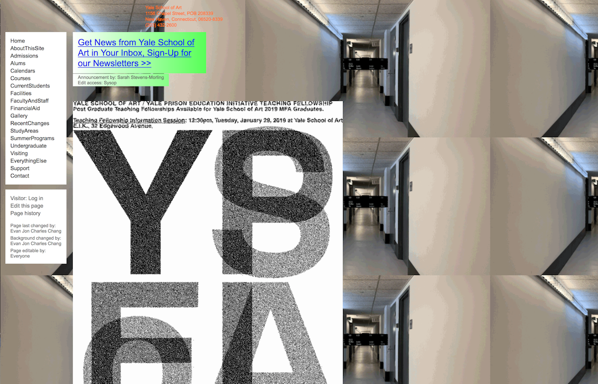
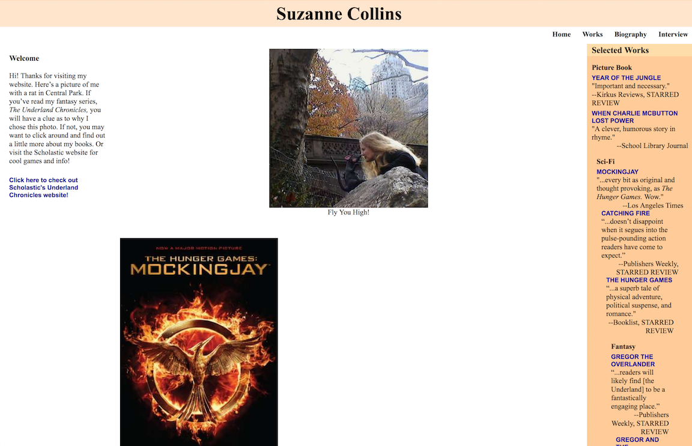

Middle Plane

- This website advertises an art magazine called Middle Plane
- This website contains a video background of a person flipping through the magazine, with type indicating the issue, a "next" button, and links to buy and contact.
- This website's navigation seems simple, but the fact that the first issue is labeled "issue 0" and that the "next" button leads to a page with only a "previous" option
leads to confusion when navigating. "Buy" and "contact" pages are styled very differently, leading to a lack of cohesion between subpages of the site. However, this is a Brutalist website,
so this is probably intentional.
Yale University School of Art

- This website represents Yale's school of art
- This website contains information about the program in a menu to the left of the screen, and many moving graphics.
- This website has very intuitive and simple navigation. All jarring elements come from the design of the motion graphics, which are the central
focus of the sit's visuals but don't hinder navigation.
Suzanne Collins Books

- This website represents Suzanne Collins, writer of the Hunger Games, and her work.
- This website contains a heading, photo of Collins and her books, and selected reviews in a side column.
- This website has clear navigation to pages for works, biography, and interviews, but the antiquated and unstyled visuals are distractingly ugly and detract from the experience.